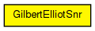

Gilbert-Elliot signal-noise evaluator
This component has been taken over from Mobility Framework 1.0a5.
The following diagram shows usage relationships between types. Unresolved types are missing from the diagram.

The following diagram shows inheritance relationships for this type. Unresolved types are missing from the diagram.
| Name | Type | Default value | Description |
|---|---|---|---|
| debug | bool | false |
debug switch |
| transmitterPower | double | ||
| bitrate | double | ||
| headerLength | int | ||
| carrierFrequency | double | ||
| thermalNoise | double | ||
| pathLossAlpha | double | ||
| sensitivity | double | ||
| meanGood | double | ||
| meanBad | double |
| Name | Direction | Size | Description |
|---|---|---|---|
| uppergateIn | input | ||
| uppergateOut | output | ||
| radioIn | input |
to receive AirFrames |
// // Gilbert-Elliot signal-noise evaluator // // This component has been taken over from Mobility Framework 1.0a5. // simple GilbertElliotSnr { parameters: bool debug = default(false); // debug switch double transmitterPower @unit(mW); double bitrate @unit(bps); int headerLength @unit(b); double carrierFrequency @unit(Hz); double thermalNoise @unit(dBm); double pathLossAlpha; double sensitivity @unit(dBm); double meanGood; double meanBad; gates: input uppergateIn; output uppergateOut; input radioIn @labels(AirFrame); // to receive AirFrames }